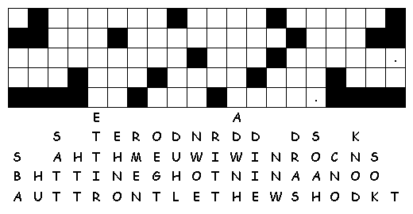

This Week: 1
Kings 19:1-4, (5-7), 8-15a
and Psalms
42 and 43
or Isaiah
65:1-9
and Psalm
22:19-28,
Galatians
3:23-29,
Luke
8:26-39
Elementary School Pew-work
|
Unscramble the bolded words: "Go out and dsant __ __ __ __ __ on the mountain," the OLRD __ __ __ __ replied. "I want you to see me when I pass by." All at once, a rsontg __ __ __ __ __ __ wind shook the mountain and shattered the ockrs __ __ __ __. But the LORD was not in the wind. Next, there was an aheaequkrt __ __ __ __ __ __ __ __ __ __ , but the LORD was not in the earthquake. Then there was a fire, but the LORD was not in the fire. Finally, there was a gentle ezebre__ __ __ __ __ __, and when hEjali __ __ __ __ __ heard it, he covered his face with his coat. He went out and stood at the entrance to the cave. The LORD asked, "Elijah, why are you here?" Elijah answered, "LORD God All-uloPerfw,__ __ __ __ __ __ __ __ I've always done my best to obey you. |
|
|
 |
|
Next week: 2 Kings 2:1-2, 6-14 and Psalm 77:1-2, 11-20 or 1 Kings 19:15-16, 19-21 and Psalm 16, Galatians 5:1, 13-25, Luke 9:51-62